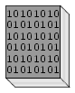

Use the Quick-start links to find industrial documents assigned for reading in your homework (worksheet questions) Start here!
Lessons In Industrial Instrumentation textbook: Click here to download or view.
Most of the files contained in this reference collection are copyrighted material. Permission has been obtained from all the respective copyright holders for inclusion of these files in this collection, for the express purpose of academic use only. Here are the email correspondences with each of the copyright holders represented.
Please read these permission notices if you have any questions regarding proper use of the materials contained in this reference collection.
Most of the files in this reference are in Adobe PDF format, and thus require that Adobe Acrobat software be installed on your computer. You may download Acrobat software freely off the internet from a variety of locations.
Click here to go to the directory containing tutorials on measurement and control theory.
A collection of product manuals and datasheets for some of the instruments you will encounter in your education and on the job.
Files in this section are courtesy of Michael Brown, a process control engineer working out of South Africa. Click here to go to the directory containing tutorials on measurement and control theory.
A few step-by-step tutorials on specific devices and technologies.
A collection of documents related to safety and health in industrial environments, including several official accident reports. This section also contains documents related to computer (digital) security.